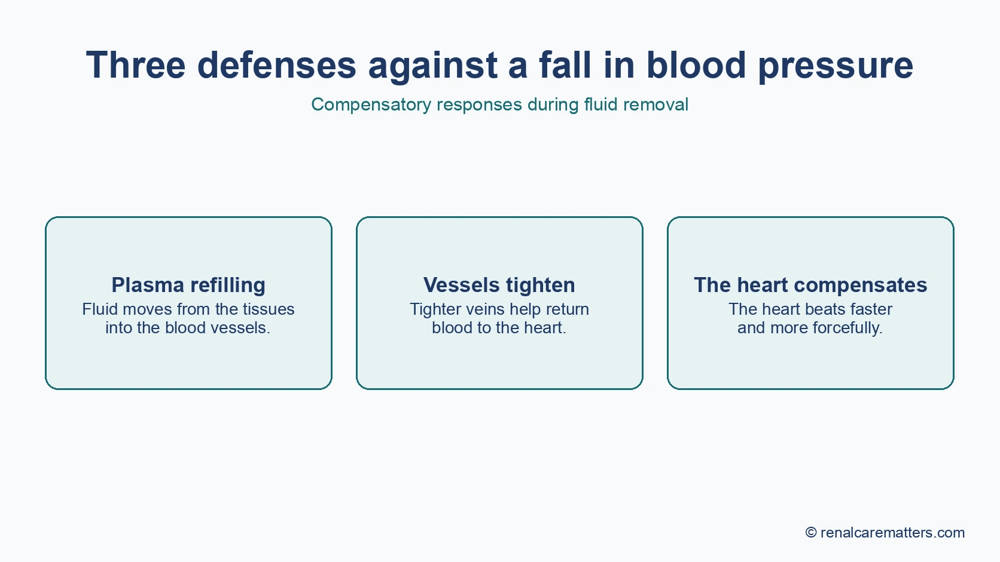
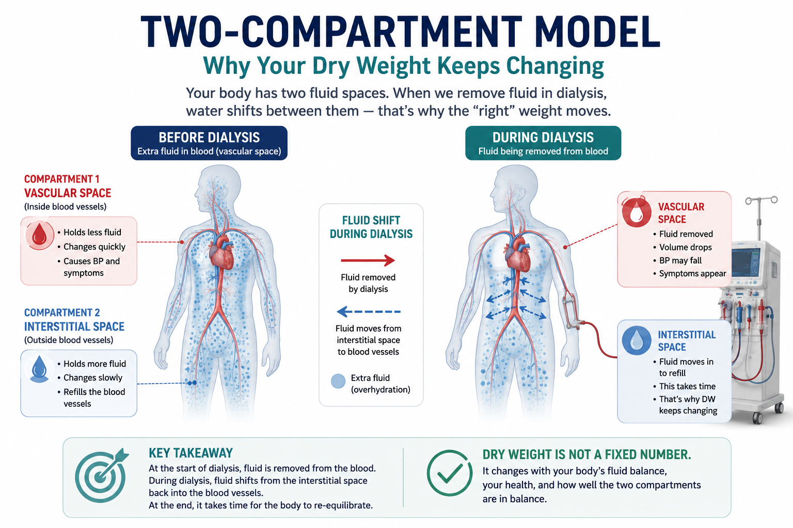
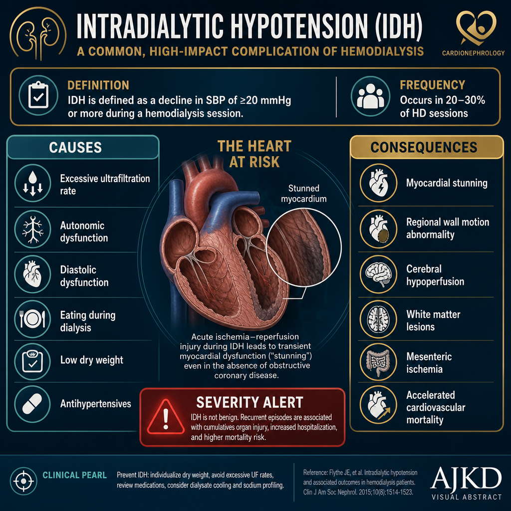
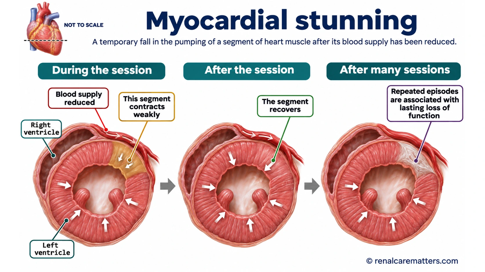
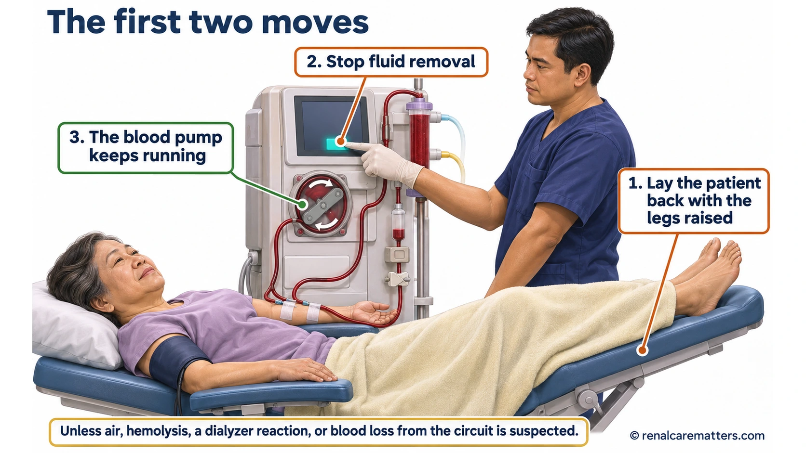
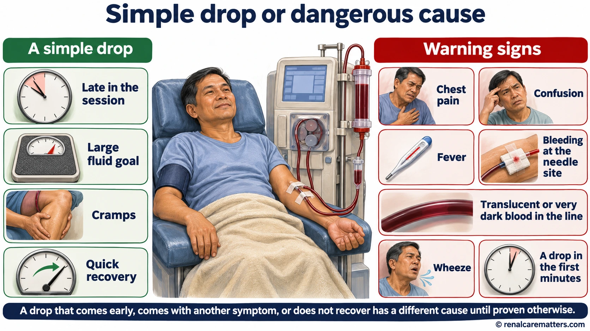

Why blood pressure falls during dialysis, the stepwise response, and how to tell a simple drop from a dangerous cause.
PublishedNailathalaGipatikPepalwal:ReferencesMga SanggunianMga TinubdanReng Reperensya:14Audience: Physicians who cover hemodialysis shifts · attending nephrologists, medical directors, and head nurses who orient themRead timeOras ng pagbasaOras sa pagbasaOras ning pamamasa:
This module is study material for physicians on duty in hemodialysis units. It explains the reasoning behind common decisions; it is not a protocol. At the chairside, follow your unit’s protocol and ask the attending nephrologist for guidance. Doses and cut-off values are set by your unit. Every case is fictional.
Learning objectives
After this module you should be able to
Explain why blood pressure falls during dialysis, using plasma refilling, vessel tone, and the response of the heart.
Describe how intradialytic hypotension is defined in the literature and why the definitions differ.
Carry out the stepwise response to a falling pressure in the order your unit’s protocol sets.
Separate a volume-related drop from a dangerous cause by timing, accompanying symptoms, and response to first steps.
State when dialysis is stopped and when blood must not be returned to the patient.
List prevention measures to suggest to the attending nephrologist, with the strength of evidence for each.
Pre-testBefore you read, answer the 8 self-assessment questions and note your score. After the module, select New set of questions and compare. The difference is what you learned; the questions you still miss are what to reread.
Start here
The big picture, in plain words
In plain wordsPicture a small rooftop tank that supplies a house. A pump draws water out of the tank at a steady rate. A narrow pipe from a much larger cistern refills it, but slowly. If the pump is faster than the pipe, the tank level falls and the taps run weak. During dialysis the blood is the small tank, the tissues are the cistern, and the machine is the pump.
The picture has a limit. A tank is passive, and the body is not. When blood volume falls, the vessels tighten and the heart works harder, and the pressure holds. Pressure falls when fluid removal outruns refilling and these active defenses fail.
Figure 1 · Key terms for this module
Intradialytic hypotension (IDH)A fall in blood pressure during a dialysis session. Published definitions differ.
Nadir pressureThe lowest systolic pressure recorded during a session.
Plasma refillingMovement of fluid from the tissues back into the blood vessels as the machine removes water.
Vascular toneThe degree of tightening in the walls of small arteries and veins.
Autonomic neuropathyDamage to the nerves that control heart rate and vessel tone. It is common in diabetes and in kidney failure.
Myocardial stunningA temporary fall in the pumping of a segment of heart muscle after its blood supply has been reduced.
Ultrafiltration (UF)Removal of water from the blood by pressure across the dialyzer membrane.
Most episodes are volume related and recover within minutes. A few are the first sign of something dangerous. Your work is to treat the first kind promptly and to recognize the second kind early.
Opening case · fictional
Case: Hour three
Mr. Ernesto Bautista, 64, has had diabetes for twenty years. He dialyzes on Mondays and Thursdays through a left arm fistula. Today is Monday. He arrived 4.4 kilograms above his dry weight of 58 kilograms, and the prescribed session is four hours. He took his amlodipine and carvedilol at six this morning. At hour two his wife brought him rice and fried fish, and he ate all of it.
At hour three, the nurse, Ms. Joy Mercado, calls you to his chair. He is yawning, his calves are cramping, and he says the room is going dim. His blood pressure is 82/48 mm Hg. It was 148/84 at the start. His heart rate is 62 per minute. Ms. Mercado has already laid the chair back and stopped fluid removal, as the unit’s protocol allows.
Before reading on, decide:
What do you do in the next two minutes, and in what order?
What tells you whether this is a volume-related drop or something more dangerous?
What will you suggest to the attending nephrologist to prevent the next episode?
Keep your answers in mind. The lesson gives you what you need, and the case review near the end shows one sound response.
Lesson · part 1
Why the pressure falls: three defenses
Module 2 explained plasma refilling. The machine removes water only from the blood, and the tissues must refill the vessels. The fluid goal for one session is often about as large as the whole plasma volume.1 A healthy circulation tolerates this because three defenses act together.2

Figure 2. Three defenses hold the pressure while the machine removes fluid: refilling from the tissues, tightening of the vessels, and the response of the heart. Kidney failure and its companions weaken each one.
First, fluid moves from the tissues into the vessels and replaces part of what the machine removes. Second, the vessels tighten. Third, the heart beats faster and more forcefully.
Veins matter more than most physicians expect, because they hold most of the blood volume. When they tighten, they return blood to the heart. When they relax, blood pools in them and the heart has less to pump.2

Figure 3. Refilling moves fluid from the tissue space into the vessels. It has a speed limit, and the limit differs between patients.
A dialysis patient often brings a weakened version of each defense to the chair.
Defense
What weakens it
What you may notice
Refilling
A fast fluid removal rate after a large weight gain. A dry weight set too low
A drop late in the session, with cramps
Vessel tone
Autonomic neuropathy. Blood pressure medicines taken before the session. A meal during dialysis, which opens the vessels of the gut. A rise in body temperature during the session, which opens the vessels of the skin
A drop soon after eating. A warm, flushed patient
Heart response
A thick, stiff left ventricle that needs full filling. A weak ventricle. Coronary artery disease. Valve disease. Medicines that slow the heart
A pulse that does not rise as the pressure falls
In some patients the nerve signals that tighten the vessels switch off abruptly when the heart is poorly filled. The pressure and the heart rate then fall together. This reflex withdrawal of sympathetic tone is one proposed explanation for a sudden drop with a slow pulse.2 The practical point is that a normal or slow pulse does not make a low pressure safe.
RememberAt every episode, ask which defense failed: refilling, the vessels, or the heart. The answer points to the cause and to the prevention.
Lesson · part 2
How the literature defines it, and how often it happens
No single definition of intradialytic hypotension (IDH) is accepted. Studies use a fall from the starting pressure, a lowest (nadir) pressure, symptoms, or the need for an intervention. The European Best Practice Guideline (EBPG) group stated that it could not give an evidence-based definition.3
Source
Definition used
Comment
EBPG, 2007
A fall in systolic pressure of 20 mm Hg or more, or in mean arterial pressure of 10 mm Hg or more, with symptoms and a need for nursing intervention3
Opinion based
Nadir-based definition
A lowest systolic pressure below 90 mm Hg during the session4
Simple to measure
Kidney Disease: Improving Global Outcomes (KDIGO) conference, 2020
Any symptomatic fall in systolic pressure, or a nadir below 90 mm Hg, should prompt a review of pressure and volume management5
A conference statement, not a graded recommendation
Flythe and colleagues compared common definitions in 1,409 patients from the Hemodialysis (HEMO) Study and 10,392 patients from a large dialysis provider. A nadir systolic pressure below 90 mm Hg was the definition most strongly associated with death. In patients who started the session at 160 mm Hg or higher, a nadir below 100 mm Hg carried the strongest association. Definitions built on symptoms or interventions were not associated with death.4 The analysis was observational and does not show that preventing a low nadir prolongs life.

Figure 4. Intradialytic hypotension at a glance: who is at risk, what the patient feels, and the first response.
Frequency depends on the definition as well. In a Dutch study of 3,818 sessions, the pressure fell by the EBPG amount in 77.7% of sessions, symptoms occurred in 21.4%, and nurses intervened in 8.5%. The full EBPG definition was met in 6.7%.6 A later meta-analysis estimated that about 10% to 12% of sessions are affected.7 The KDIGO conference report quotes a range up to half of sessions.5
Yawning, nausea, cramps, and dimming vision are the usual early signs, but a patient can reach a low nadir without complaining. The trigger for action in your unit is the one written in your unit’s protocol. Learn it before your first shift.
Lesson · part 3
Why a low pressure matters beyond the moment
The heart is the best studied. Burton and colleagues performed echocardiography during dialysis in 70 patients. In 64% of them, segments of the left ventricle contracted less well during the session, a finding called myocardial stunning. Age, the volume of fluid removed, intradialytic hypotension, and the troponin level were each associated with it. Patients with stunning had a higher death rate over 12 months.8 In a follow-up of 30 patients with stunning, the resting ejection fraction fell from about 62% to 53% over one year.9

Figure 5. Myocardial stunning. A segment of heart muscle contracts weakly while its blood supply is reduced and recovers afterward. Repeated episodes are associated with lasting loss of function.
These were small observational studies from one center. They do not prove that preventing stunning improves survival.
Larger cohorts point the same way. In records from 39,497 patients in the United States, intradialytic hypotension was associated with death (adjusted hazard ratio 1.07) and with myocardial infarction (1.20).10 Sicker patients drop their pressure more easily, so part of this association may reflect the patients and not the episodes.
Figure 6 · What a low pressure can cost
HeartStunning during the session, and a falling ejection fraction over time.
AccessAn association with clotting of the fistula or graft.
Dialysis doseInterrupted sessions deliver less treatment.
Fluid balanceFluid given back and a missed goal leave the patient overloaded.
The KDIGO conference report summarizes the associations with access clotting, a lower dialysis dose, and death.5
Lesson · part 4
The stepwise response at the chair
The first steps restore blood to the heart and stop the loss. Guidelines and textbooks agree on them, although the evidence behind each is modest.3,11 Nurses usually begin them under the unit’s protocol before you arrive. You confirm them, examine the patient, and decide whether this is a simple drop.
Figure 7 · Hypotension response ladder
Go to the chairLook at the patient. Check that the patient responds, breathes comfortably, and has a pulse. Ask for help early.
Lay the patient backRecline the chair flat and raise the legs, as far as the patient’s breathing allows. Turn the patient to the side if vomiting.
Stop fluid removalAsk the nurse to stop ultrafiltration. The blood pump keeps running unless you suspect air, hemolysis, a severe dialyzer reaction, or blood loss from a dislodged needle or open line.
Recheck the pressureRepeat it now and every few minutes. Count the pulse yourself and note the rhythm.
Give oxygenAs your unit’s protocol directs.
Look for a causeChest pain, breathlessness, fever, bleeding, the needle sites, the lines, the time into the session, and the fluid removed so far. Ask for a blood sugar check in a patient with diabetes, per protocol.
Give fluid if there is no recoveryUse the fluid and the amount in your unit’s protocol, in measured portions, and reassess after each.
Call the attending nephrologistReport what you found and what was done. Agree on the plan for the rest of the session.

Figure 8. The first two moves: lay the patient back with the legs raised, and stop fluid removal. The blood pump keeps running unless air, hemolysis, a dialyzer reaction, or blood loss from the circuit is suspected.
What the evidence says about each step
The head-down, legs-up position is recommended on opinion only, with a note that its effect may be limited. It is used because it is quick and carries little risk in a patient who is breathing comfortably. A breathless patient may not tolerate lying flat.11 In the EBPG, stopping ultrafiltration rests on low-level evidence. Isotonic saline is advised for patients who do not respond to those two steps, and hypertonic saline showed no advantage over it. The guideline also advises each center to write a stepwise protocol.3
Fluid is a treatment with a cost
Module 2 explained that fluid given to a patient without urine output stays in the body. Give what the protocol allows, stop when the pressure recovers, and record the total. A patient who needs repeated portions does not have a simple drop.
Figure 9. Cramps often accompany a volume-related drop. Stretching the calf helps while the pressure recovers.
After the pressure recovers
Do not restart fluid removal at the old rate by reflex. The remaining goal, the remaining time, and the dry weight belong to the prescription. Ask the attending nephrologist whether to continue at a lower goal, without fluid removal, or to end the session.
Stop and callStop and call the attending nephrologist at once when the pressure does not recover after the first steps of the protocol, when it falls again after recovering, or when the patient needs more than one portion of fluid. Continue the protocol while you call.
Lesson · part 5
Simple drop or dangerous cause
Fluid removal explains most episodes. A minority have another cause, and some of those causes kill within minutes to hours. You separate them by timing, by what accompanies the drop, and by the response to first steps.

Figure 10. A simple drop comes late, follows a large fluid goal, and recovers quickly. A drop that comes early, comes with another symptom, or does not recover has a different cause until proven otherwise.
Cause
Clues at the chair
First move, while you call
Myocardial infarction or ischemia
Chest pain or pressure, breathlessness, sweating. Pain may be absent in diabetes
Electrocardiogram (ECG). Follow the unit’s chest pain protocol
Arrhythmia
A very fast, very slow, or irregular pulse. Palpitations. Fainting
ECG and cardiac monitor
Bleeding
A dislodged needle or open line. Blood under the blanket. Black stools. New abdominal or back pain
Uncover and inspect the access and lines. Stop the blood pump if a needle is out or a line is open. Apply pressure to a bleeding site
Sepsis
Fever or chills, often with a catheter. Warm skin. Confusion
Temperature. Follow the unit’s fever protocol
Cardiac tamponade
Low pressure early in several sessions with little fluid removed. Distended neck veins. Faint heart sounds
Stop fluid removal. Urgent transfer for echocardiography
Air in the circuit
Sudden cough, chest tightness, or collapse. Air or foam in the venous line. An air detector alarm
Stop the blood pump and clamp the venous line. Do not return the blood
Hemolysis
Chest, back, or abdominal pain. Translucent blood in the venous line, described as port-wine or cherry red. More than one patient affected
Stop the blood pump and clamp the lines. Do not return the blood
Dialyzer reaction
Onset in the first minutes. Itching, flushing, wheeze, swelling of the face, back pain
Stop the blood pump and clamp the lines. Do not return the blood. Follow the unit’s reaction protocol
The clues and first moves in this table follow a standard dialysis text.11 Other modules cover each of these causes in full.
Figure 11 · Simple or sinister
When did it startA drop in the first half hour, before much fluid is removed, is unlikely to be from fluid removal alone.
What came with itChest pain, breathlessness, altered consciousness, fever, bleeding, wheeze, or pain in the back or abdomen each point away from a simple drop.
What do the pulse and rhythm showA very fast, very slow, or irregular pulse needs an ECG.
What do the access and the lines showCheck the needle sites, every connection, and the color of the blood in the venous line.
Did it recoverA simple drop improves within minutes of lying back and stopping fluid removal. Failure to recover is a warning sign in itself.
Does the story fitA large fluid goal, a recent meal, or morning blood pressure tablets support a simple drop.
The timing rule comes from physiology and experience, not from a diagnostic study. Use it to raise suspicion and never to dismiss a worrying patient.
Stop and callStop and call the attending nephrologist immediately, and call for help in the unit, when a low pressure comes with chest pain, breathlessness, altered consciousness, fever, bleeding, or an abnormal pulse. Start the unit’s emergency protocol while you call. Do not wait to see whether the pressure recovers.
RememberIf more than one patient drops at the same time, suspect the dialysis fluid or the water. Tell the charge nurse and the technician, and call the attending nephrologist and the medical director.
Lesson · part 6
Prevention: what to suggest to the nephrologist
One episode needs treatment. A pattern needs a change in the plan, and the plan belongs to the attending nephrologist. You notice the pattern and suggest options. The KDIGO conference advised that measures that do not use medicines come first: reassess the target weight, reduce the fluid removal rate, and look after the heart.5
Option to raise
Why it could help
Evidence and limits
Reassess the dry weight
A target set too low dries the patient below their true weight
Clinical examination is the basis. Guideline opinion3
Less salt and smaller weight gains
A smaller gain means a slower fluid removal rate
Higher weight gain is associated with more episodes in cohort data10
Limits the rise in body temperature, so skin vessels stay tight
Small trials show fewer episodes.12 The EBPG advised it for patients with frequent episodes.3 A later large trial of center-wide cooling showed no fewer cardiovascular events and no smaller fall in pressure13
No meal during or shortly before dialysis
A meal opens the vessels of the gut
Sources disagree. See below
Review the timing of blood pressure medicines
A dose taken shortly before the session peaks during fluid removal
The EBPG advises caution and advises against routine withholding.3 KDIGO calls the effect of withholding unknown5
Cardiac evaluation
A new drop in a previously stable patient may be a heart problem
Changes to the dialysis fluid, or a medicine such as midodrine
These act on refilling and vessel tone
Each has a trade-off. Midodrine evidence comes from small, short studies5
Cool dialysis fluid: what the trials do and do not show
Dialysis tends to raise body temperature, and the skin vessels open to lose heat. Slightly cooler dialysis fluid counters this. A meta-analysis of 26 randomized trials with 484 patients found that cooler fluid reduced the rate of intradialytic hypotension by about 70% and raised mean arterial pressure during the session. The trials were small, some lacked blinding, and none reported long-term outcomes.12
The MyTEMP trial then tested cooling as a policy. It randomized 84 centers in Ontario, Canada, treating 15,413 patients, to dialysis fluid set slightly below each patient’s body temperature or to a standard temperature. Over four years, cardiovascular death or admission occurred in 21.4% of patients in the cooler group and 22.4% in the standard group, with an adjusted hazard ratio of 1.00. The mean fall in systolic pressure during sessions did not differ.13
The two results answer different questions. MyTEMP shows that cooling the fluid for every patient in a center does not reduce cardiovascular events. It did not test cooling for the individual patient with frequent episodes, and the mean temperatures achieved in its two groups were close. The temperature setting is part of the prescription.
Food during dialysis: two sources that disagree
The EBPG advises that patients with frequent episodes avoid eating during or shortly before dialysis, weighed against nutrition in a malnourished patient.3 A later nutrition consensus statement concluded that meals during dialysis should be considered for patients without contraindications, and it names a fall in pressure after eating as a risk.14 For a patient who drops after a meal, a reasonable suggestion is to move the meal, not to stop the patient from eating.
Arithmetic illustration, not a target. Fluid removal rate = fluid to remove (mL) ÷ time (hours) ÷ weight (kg). 4,400 mL over 4 hours in a 58-kg patient = about 19 mL per kg per hour. The same 4,400 mL over 5 hours = about 15 mL per kg per hour.
RememberWhen you report an episode, include the weight gain, the fluid removal rate, the time of onset, the last meal, the morning medicines, and the number of recent episodes.
Lesson · part 7
After the episode: record, hand off, and the call card
An episode is finished when the patient has left safely, the record shows what happened, and the attending nephrologist knows.
Figure 12 · Before the patient leaves
Standing pressureCheck the pressure seated and then standing, per protocol. A patient who is dizzy on standing is not ready to go.
AccessConfirm that the needle sites have stopped bleeding, and check the thrill.
AdviceExplain what happened. Ask the patient to report chest pain, breathlessness, or fainting at home.
Be exact about the blood. Returning the blood in the circuit gives the patient back volume. It is right when a session ends for a cause in the patient. It is wrong when the blood or the circuit may be the cause.
Figure 13 · Call card: a falling pressure during dialysis
RecognizeYawning, nausea, cramps, dim vision, a quiet patient, or a low reading on the monitor. Recheck the pressure and count the pulse yourself.
First 2 minutesLay the patient back with the legs raised, as far as breathing allows. Stop fluid removal. Give oxygen per protocol. Check chest pain, breathing, consciousness, temperature, needle sites, and lines.
Stop dialysis?Not for a simple drop that recovers. Stop the blood pump at once if you suspect air, hemolysis, a severe dialyzer reaction, or blood loss from a dislodged needle or open line. End the session, on the nephrologist’s advice, if the pressure does not recover or a dangerous cause is likely.
Return the blood?Yes, when the session ends for a cause in the patient and the circuit is sound. Do NOT return the blood if it may be hemolyzed, if there is air in the venous line, if a severe dialyzer reaction is suspected, or if the circuit has clotted. Clamp the lines and keep the circuit for inspection.
CallThe attending nephrologist, at once, for no recovery after first steps, a second drop, or any red flag. Use the Situation, Background, Assessment, Recommendation (SBAR) format from Module 1. Follow the unit’s escalation list if there is no answer.
WriteTime, pressures, pulse, symptoms, fluid removed, steps and response, fluid given, advice received, and the patient’s condition on leaving.
On the floor
Real situations: problems and solutions
These are fictional but typical. For each one, cover the answer, decide what you would do, then compare. Where a step depends on local rules, your unit’s procedure and your supervisor’s direction come first.
The drop at minute ten
What you see
A woman starting her third week of dialysis becomes itchy and flushed ten minutes into the session. She is wheezing and her pressure has fallen sharply. Almost no fluid has been removed.
What is likely going on
A drop this early is not from fluid removal. Itching, flushing, and wheeze in the first minutes suggest a reaction to the dialyzer or the circuit.
What to do
Ask the nurse to stop the blood pump and clamp the lines. Do not return the blood. Start the unit’s reaction protocol and call the attending nephrologist while you do so.
Why it matters
Returning the blood, the usual move when a session ends, would send more of the trigger into the patient.
The quiet patient under the blanket
What you see
An elderly man who usually chats has gone silent in hour two. His pressure is low and his pulse is fast. He is covered to the chin with a blanket.
What is likely going on
Bleeding must be excluded. A venous needle that has slipped out can lose a large volume of blood under a blanket within minutes.
What to do
Uncover the access arm and the lines at once. If a needle is out, stop the blood pump, press on the site, call for help, and call the attending nephrologist. Follow the unit’s protocol for the first steps.
Why it matters
The access and every connection should stay visible for the whole session. A covered access hides the one cause you can see directly.
Fourth episode this month
What you see
A woman has a simple drop in hour three, and it recovers with first steps. Her chart shows three similar episodes in recent weeks. Her appetite has improved since a hospital stay and her family says she has gained weight.
What is likely going on
She may have gained body tissue, so her dry weight is now set too low. Each session is drying her below her true weight.
What to do
Manage today’s episode by protocol. Then report the pattern to the attending nephrologist and suggest a dry weight reassessment. Do not change the dry weight yourself.
Why it matters
A pattern is a prescription problem. Treating each episode alone leaves the cause in place.
Low pressure with chest tightness
What you see
A man with diabetes has a pressure of 88/52 mm Hg in hour two. He denies pain but says his chest feels tight and he is sweating. His pulse is irregular.
What is likely going on
This is not a simple drop. A heart attack or an arrhythmia is likely, and diabetes can blunt the pain.
What to do
Lay him back, stop fluid removal, give oxygen per protocol, and obtain an ECG. Call the attending nephrologist and call for help in the unit immediately. Start the chest pain protocol and prepare for transfer.
Why it matters
The first steps are the same as for a simple drop, but waiting to see whether he recovers would lose time that the heart does not have.
Early drops, session after session
What you see
A man who has missed several sessions returns. For the third session in a row his pressure falls in the first half hour with little fluid removed. His neck veins are distended although he is not breathless.
What is likely going on
Fluid around the heart is possible. Pericardial effusion occurs in patients who have been underdialyzed, and it prevents the heart from filling.
What to do
Stop fluid removal and call the attending nephrologist now. Report the pattern, the neck veins, and the missed sessions, and ask about urgent echocardiography and transfer.
Why it matters
Removing fluid from a patient with tamponade lowers the filling of the heart further and can cause collapse.
Field notes
Watch for yawning. Experienced dialysis nurses treat it as a pressure reading.
Count the pulse with your own fingers during every episode. The monitor gives a rate, and your fingers give the rhythm.
Ask what time the patient last ate and which tablets were taken that morning. Write both in the record.
Be on the floor during the last hour of each shift. That is when most volume-related drops occur.
When a patient has a second episode in the same week, tell the attending nephrologist that day, even if both recovered easily.
Case review
Back to the case: Hour three
What do you do in the next two minutes? Ms. Mercado has already performed the first two steps. You confirm them, then look at Mr. Bautista. He answers you and is breathing comfortably. You recheck the pressure and count his pulse, which is regular. You ask about chest pain and breathlessness, and he has neither. You uncover his arm and check both needle sites and the lines. You ask for oxygen and a blood sugar check under the protocol. If his pressure has not improved on the next reading, the protocol’s fluid step follows. You call the attending nephrologist in either case.
Simple or sinister? Several features fit a volume-related drop. It came in hour three. His fluid removal rate works out to about 19 mL per kg per hour, which is fast. He ate a full meal an hour earlier and took two blood pressure medicines that morning. He has cramps. The pulse of 62 is the feature to respect. Carvedilol and autonomic neuropathy can both hold the pulse down. A slow rate also means that his heart cannot compensate, and it does not exclude a rhythm problem. Diabetes can hide the pain of a heart attack. If he does not recover within minutes, an ECG and an urgent call come before any further fluid removal.
What will you suggest? His pressure returns to 118/70 within five minutes, and the nephrologist advises a smaller fluid goal today. You then offer options for the next session. His weight gain over the four-day gap is large, so salt and fluid intake need review with the dietitian. A longer session, or a third weekly session, would lower the rate. His meal could move to before or after dialysis. The timing of his morning medicines and his dry weight could be reviewed. Each of these is the nephrologist’s decision.
Skills lab · with your preceptor
Skills checklist: Hypotension response on a simulated patient
Perform this response on a simulated patient or a colleague in a dialysis chair while your preceptor observes and plays the nurse. Your preceptor rates each step as satisfactory, needs practice, or not observed. Steps marked Critical must all be satisfactory before sign-off. This checklist supports supervised learning; your unit’s own procedure and competency form are the authority. A printable version of every checklist is on the trainer page.
CriticalGoes to the chair at once and checks that the patient responds, is breathing, and has a pulse.
Asks for help and states the problem aloud to the nurse.
CriticalReclines the chair flat with the legs raised, as far as the patient’s breathing allows, and turns the patient to the side if vomiting.
CriticalConfirms with the nurse that fluid removal has been stopped.
CriticalRechecks the blood pressure, counts the pulse by hand, and comments on rate and rhythm.
Asks for oxygen as the unit’s protocol directs.
CriticalAsks about chest pain, breathlessness, and other symptoms, and checks the level of consciousness.
CriticalUncovers and inspects the access, the needle sites, the connections, and the color of the blood in the venous line.
Notes the time into the session, the fluid removed so far, the weight gain, the last meal, and the medicines taken today.
CriticalStates whether the findings fit a simple drop or suggest a dangerous cause, with reasons.
States the next step in the unit’s protocol if the pressure has not recovered, without quoting an amount from memory.
CriticalCalls the attending nephrologist with an SBAR report and repeats back the advice.
CriticalStates when blood must not be returned to the patient.
Documents the episode, including the response to each step.
Placement activity. For two weeks, keep a log of every episode of low pressure on your shifts: time into the session, fluid removal rate, last meal, medicines, and response. Review the log with your preceptor and identify one patient whose pattern you will report to the attending nephrologist.
Self-assessment
Check your understanding
Each visit draws 8 questions at random from this module’s 15-question bank. Choose the single best answer for each, then select Check answers; an explanation appears under the best answer. Select New set of questions for a different mix. A good target is 7 of 8 on two different sets. Nothing you select is sent anywhere; scoring happens in your browser.
Reeves, P. B., & Mc Causland, F. R. (2018). Mechanisms, clinical implications, and treatment of intradialytic hypotension. Clinical Journal of the American Society of Nephrology, 13(8), 1297–1303. https://doi.org/10.2215/CJN.12141017
Daugirdas, J. T. (2001). Pathophysiology of dialysis hypotension: An update. American Journal of Kidney Diseases, 38(4, Suppl. 4), S11–S17. https://doi.org/10.1053/ajkd.2001.28090
Kooman, J., Basci, A., Pizzarelli, F., Canaud, B., Haage, P., Fouque, D., Konner, K., Martin-Malo, A., Pedrini, L., Tattersall, J., Tordoir, J., Vennegoor, M., Wanner, C., ter Wee, P., & Vanholder, R. (2007). EBPG guideline on haemodynamic instability. Nephrology Dialysis Transplantation, 22(Suppl. 2), ii22–ii44. https://doi.org/10.1093/ndt/gfm019
Flythe, J. E., Xue, H., Lynch, K. E., Curhan, G. C., & Brunelli, S. M. (2015). Association of mortality risk with various definitions of intradialytic hypotension. Journal of the American Society of Nephrology, 26(3), 724–734. https://doi.org/10.1681/ASN.2014020222
Flythe, J. E., Chang, T. I., Gallagher, M. P., Lindley, E., Madero, M., Sarafidis, P. A., Unruh, M. L., Wang, A. Y.-M., Weiner, D. E., Cheung, M., Jadoul, M., Winkelmayer, W. C., & Polkinghorne, K. R. (2020). Blood pressure and volume management in dialysis: Conclusions from a Kidney Disease: Improving Global Outcomes (KDIGO) Controversies Conference. Kidney International, 97(5), 861–876. https://doi.org/10.1016/j.kint.2020.01.046
Kuipers, J., Oosterhuis, J. K., Krijnen, W. P., Dasselaar, J. J., Gaillard, C. A. J. M., Westerhuis, R., & Franssen, C. F. M. (2016). Prevalence of intradialytic hypotension, clinical symptoms and nursing interventions: A three-months, prospective study of 3818 haemodialysis sessions. BMC Nephrology, 17, Article 21. https://doi.org/10.1186/s12882-016-0231-9
Kuipers, J., Verboom, L. M., Ipema, K. J. R., Paans, W., Krijnen, W. P., Gaillard, C. A. J. M., Westerhuis, R., & Franssen, C. F. M. (2019). The prevalence of intradialytic hypotension in patients on conventional hemodialysis: A systematic review with meta-analysis. American Journal of Nephrology, 49(6), 497–506. https://doi.org/10.1159/000500877
Burton, J. O., Jefferies, H. J., Selby, N. M., & McIntyre, C. W. (2009). Hemodialysis-induced cardiac injury: Determinants and associated outcomes. Clinical Journal of the American Society of Nephrology, 4(5), 914–920. https://doi.org/10.2215/CJN.03900808
Burton, J. O., Jefferies, H. J., Selby, N. M., & McIntyre, C. W. (2009). Hemodialysis-induced repetitive myocardial injury results in global and segmental reduction in systolic cardiac function. Clinical Journal of the American Society of Nephrology, 4(12), 1925–1931. https://doi.org/10.2215/CJN.04470709
Stefánsson, B. V., Brunelli, S. M., Cabrera, C., Rosenbaum, D., Anum, E., Ramakrishnan, K., Jensen, D. E., & Stålhammar, N.-O. (2014). Intradialytic hypotension and risk of cardiovascular disease. Clinical Journal of the American Society of Nephrology, 9(12), 2124–2132. https://doi.org/10.2215/CJN.02680314
Daugirdas, J. T., Blake, P. G., & Ing, T. S. (Eds.). (2015). Handbook of dialysis (5th ed.). Wolters Kluwer.
Mustafa, R. A., Bdair, F., Akl, E. A., Garg, A. X., Thiessen-Philbrook, H., Salameh, H., Kisra, S., Nesrallah, G., Al-Jaishi, A., Patel, P., Patel, P., Mustafa, A. A., & Schünemann, H. J. (2016). Effect of lowering the dialysate temperature in chronic hemodialysis: A systematic review and meta-analysis. Clinical Journal of the American Society of Nephrology, 11(3), 442–457. https://doi.org/10.2215/CJN.04580415
MyTEMP writing committee. (2022). Personalised cooler dialysate for patients receiving maintenance haemodialysis (MyTEMP): A pragmatic, cluster-randomised trial. The Lancet, 400(10364), 1693–1703. https://doi.org/10.1016/S0140-6736(22)01805-0
Kistler, B. M., Benner, D., Burrowes, J. D., Campbell, K. L., Fouque, D., Garibotto, G., Kopple, J. D., Kovesdy, C. P., Rhee, C. M., Steiber, A., Stenvinkel, P., Ter Wee, P., Teta, D., Wang, A. Y. M., & Kalantar-Zadeh, K. (2018). Eating during hemodialysis treatment: A consensus statement from the International Society of Renal Nutrition and Metabolism. Journal of Renal Nutrition, 28(1), 4–12. https://doi.org/10.1053/j.jrn.2017.10.003
Educational study material for physicians. Does not replace the attending nephrologist’s orders, the unit’s protocols, required certification courses, or supervised practice.